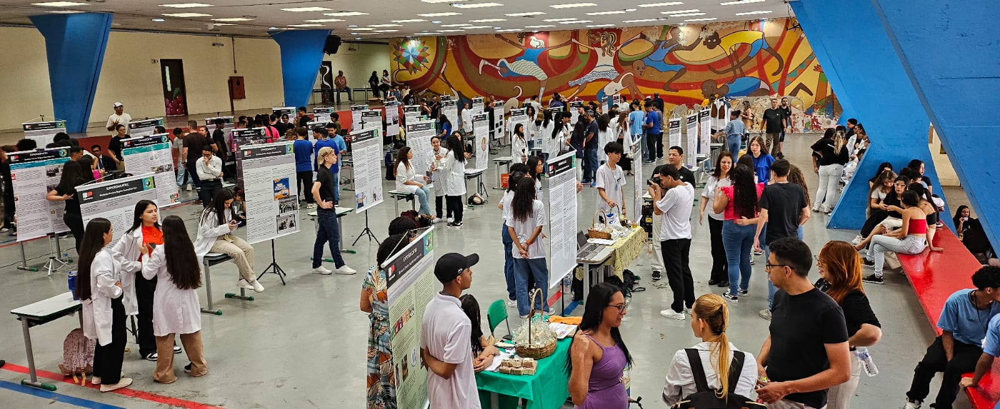

Galeria
Minhas fotos — clique para ampliar.
.jpg)
.jpg)
.jpg)

Esses resultados refletem a experiência dos participantes da 1ª edição do Congresso de Educação Profissional. Um evento feito para inspirar, conectar e transformar o futuro da aprendizagem técnica.
Sentiram-se motivados a continuar os estudos
Avaliaram as apresentações como práticas e dinâmicas
Destaque na troca com colegas e professores
Disseram que voltariam na próxima edição
O II Congresso do Ensino Profissionalizante é uma iniciativa da Unidade Regional de Ensino Guarulhos Sul, com apoio da Secretaria de Educação do Estado de São Paulo, e tem como propósito valorizar o protagonismo dos estudantes e a integração entre escola e comunidade. Esta é a segunda edição do evento, que pretende ocorrer anualmente, consolidando-se como um espaço de referência para a apresentação de projetos inovadores e soluções práticas desenvolvidas pelos estudantes dos cursos técnicos. Durante o congresso, 83 projetos serão apresentados, demonstrando a aplicação prática dos conhecimentos adquiridos e o potencial de inovação presente nas escolas públicas. O evento também funciona como um espaço de networking, onde empresários, docentes universitários e representantes da SEDUC podem conhecer de perto as soluções criativas dos estudantes e dialogar sobre o futuro da educação profissional.
Minhas fotos — clique para ampliar.